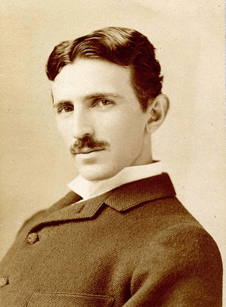

Wikipedia Preview demo site


Nikola Tesla
Nikola Tesla fue un inventor, ingeniero eléctrico, ingeniero mecánico y físico estadounidense de origen serbocroata.12
Se le conoce sobre todo por sus numerosas invenciones en el campo del electromagnetismo, desarrolladas a finales
del siglo XIX y principios del siglo XX.
Las patentes de Tesla y su trabajo teórico ayudaron a forjar las bases de los sistemas modernos para el uso de la energía eléctrica por corriente alterna (CA), incluyendo el sistema polifásico de distribución eléctrica y
el motor de corriente alterna, que contribuyeron al surgimiento de la Segunda Revolución Industrial.
Se le conoce sobre todo por sus numerosas invenciones en el campo del electromagnetismo, desarrolladas a finales
del siglo XIX y principios del siglo XX.
Las patentes de Tesla y su trabajo teórico ayudaron a forjar las bases de los sistemas modernos para el uso de la energía eléctrica por corriente alterna (CA), incluyendo el sistema polifásico de distribución eléctrica y
el motor de corriente alterna, que contribuyeron al surgimiento de la Segunda Revolución Industrial.
Su carácter, su enfrentamiento con Edison y
el halo de misterio que rodea a algunos de sus descubrimientos, hicieron que Tesla se convirtiera en un científico muy popular a partir de la década de 1990, con una abundante bibliografía disponible acerca de su vida y de su obra.
el halo de misterio que rodea a algunos de sus descubrimientos, hicieron que Tesla se convirtiera en un científico muy popular a partir de la década de 1990, con una abundante bibliografía disponible acerca de su vida y de su obra.
Nikola Tesla, de etnia serbia,56 nació en el pueblo de Smiljan (actualmente en Croacia), en el entonces Imperio austrohúngaro,
y tiempo después se nacionalizaría estadounidense
y tiempo después se nacionalizaría estadounidense
This article uses material from the Wikipedia article “Nikola Tesla”, which is released under the Creative Commons Attribution-Share-Alike License 3.0.